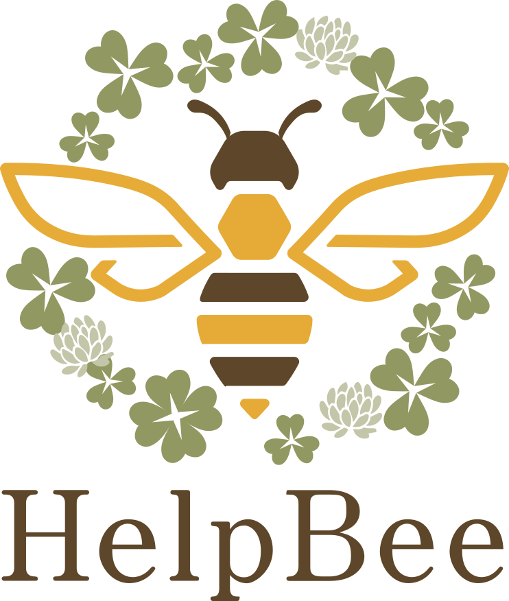

困った人と、保護したい養蜂家をつなぐ全国ネットワーク。
報告は無料、1分で完了。
🔒 個人情報は運営のみ保持。公開される情報は最小限です。
迷ったら、このフローで確認してください。
現場の写真と場所を送るだけ。所要時間1〜2分。
近くの登録養蜂家にお知らせが届きます。
養蜂家が駆けつけて、保護してくれます。
ハチが集団で「家を引っ越し」する自然現象です。
困ってる人の声が、いまもXに上がっています。
あなたも見つけたら、
📢 Help Beeへ報告
捕獲できる方を、募集しています。
登録するだけで、地域の分蜂群を入手できます。
あなたの販売ページをサイトでご紹介。
同じ志の養蜂家と、つながりが広がります。
同類の仕組みは、すでに世界各国で運営中。
ミツバチが群れを分けて新しい巣を探す自然現象です。女王蜂と働き蜂の一部が巣を離れ、木の枝や軒下などに一時的に集まります。数時間〜数日で自然に移動するため、攻撃しない限りほとんど危険はありません。
分蜂中のミツバチはお腹いっぱいに蜜を蓄え、守るべき巣もないため非常に温和です。直接触ったり脅かしたりしなければほとんど刺しません。静かに距離をとってHelp Beeへ報告してください。
はい、完全無料です。写真と場所を送るだけで1〜2分で完了します。
もちろんです。「大量のハチを見かけた」「これって分蜂？」と思ったらどなたでもお気軽に報告してください。
はい、全国どこからでも報告・登録いただけます。分蜂は春〜初夏にかけて全国各地で起こる現象です。
登録フォームから氏名・活動地域・連絡先を入力するだけです。登録は無料で、地域の分蜂群の入手機会やはちみつ販売ページの掲載などの特典があります。